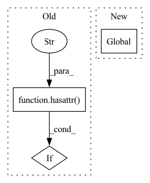

Pattern ID :14760

Before Change
// TODO: Better method here?
node_list = list(G.nodes)
attr_dict = dict(zip(node_list, node_attr))
if not hasattr(G, "netlib"):
networkx.set_node_attributes(G, attr_dict, name=attr_name)
else:
G.netlib.set_node_attributes(G, attr_dict, name=attr_name)
After Change
node_attr (array_like): node attributes.
// TODO: Better method here?
global _netlib
node_list = list(G.nodes)
attr_dict = dict(zip(node_list, node_attr))
// if not hasattr(G, "netlib"):
// networkx.set_node_attributes(G, attr_dict, name=attr_name)
In pattern: SUPERPATTERN
Frequency: 3
Non-data size: 3
Instances
Fragment ID: 48509424
Project Name: snap-stanford/deepsnap
Commit Name: 610bdadfd0d2dd94a4ef55318e78919a5153f14b
Time: 2020-12-05
Author: zecheng@stanford.edu
File Name: deepsnap/graph.py
M Class Name: Graph
N Class Name: Graph
M Method Name: add_node_attr(3)
N Method Name: add_node_attr(3)
M Parent Class: object
N Parent Class: object
M File Name: deepsnap/graph.py
N File Name: deepsnap/graph.py
M Start Line: 1509
M End Line: 1515
N Start Line: 1504
N End Line: 1511
'>
Before Change
def __init__(self, G=None, netlib=None, **kwargs):
self.G = G
if self.G is None and hasattr(G, "netlib"):
self.netlib = G.netlib
else:
if not netlib:
After Change
def __init__(self, G=None, netlib=None, **kwargs):
global _netlib
self.G = G
if netlib:
_netlib = netlib
keys = [
'>
Fragment ID: 48509425
Project Name: snap-stanford/deepsnap
Commit Name: 610bdadfd0d2dd94a4ef55318e78919a5153f14b
Time: 2020-12-05
Author: zecheng@stanford.edu
File Name: deepsnap/graph.py
M Class Name: Graph
N Class Name: Graph
M Method Name: __init__(3)
N Method Name: __init__(3)
M Parent Class: object
N Parent Class: object
M File Name: deepsnap/graph.py
N File Name: deepsnap/graph.py
M Start Line: 32
M End Line: 39
N Start Line: 31
N End Line: 35
'>
Before Change
// TODO: parallel?
edge_list = list(G.edges)
attr_dict = dict(zip(edge_list, edge_attr))
if not hasattr(G, "netlib"):
networkx.set_edge_attributes(G, attr_dict, name=attr_name)
else:
G.netlib.set_edge_attributes(G, attr_dict, name=attr_name)
After Change
edge_attr (array_like): edge attributes.
// TODO: parallel?
global _netlib
edge_list = list(G.edges)
attr_dict = dict(zip(edge_list, edge_attr))
// if not hasattr(G, "netlib"):
// networkx.set_edge_attributes(G, attr_dict, name=attr_name)
'>
Fragment ID: 48509423
Project Name: snap-stanford/deepsnap
Commit Name: 610bdadfd0d2dd94a4ef55318e78919a5153f14b
Time: 2020-12-05
Author: zecheng@stanford.edu
File Name: deepsnap/graph.py
M Class Name: Graph
N Class Name: Graph
M Method Name: add_edge_attr(3)
N Method Name: add_edge_attr(3)
M Parent Class: object
N Parent Class: object
M File Name: deepsnap/graph.py
N File Name: deepsnap/graph.py
M Start Line: 1528
M End Line: 1534
N Start Line: 1525
N End Line: 1532